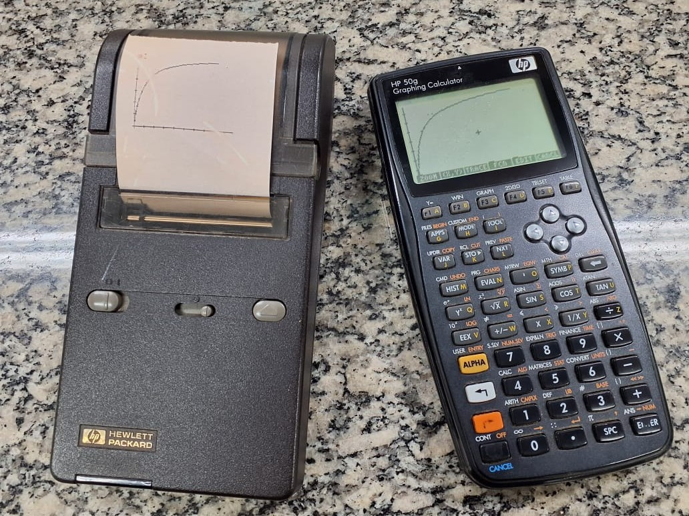

HP50G Graphing Calculator
This section is not directly related to didactic–scientific tools for reproducible teaching. It is included as a tribute to the remarkable arsenal of programmable scientific calculators that long supported scientific research and teaching–learning across several fields of the Exact Sciences and the Natural Sciences.
Tangential to these initiatives, the use of programmable calculators reached its peak in a number of singular moments, such as the Hewlett-Packard HP-41C model, which was used in nine U.S. Space Shuttle missions during the 1980s.
In that spirit, below are some programs developed by the author for the HP50G model, released by the manufacturer in 2006. The calculator can be programmed in RPL, a blend of RPN (Reverse Polish Notation) and Lisp. Although discontinued in 2015, it can still be found both in online marketplaces and in the passionate hearts of its admirers—among whom this humble devotee shares the healthy addiction (heritage nerd).

In the years close to the HP50G discontinuation, a very active online community joined forces to consolidate a new firmware for the calculator, culminating in the newRPL project. The new firmware was developed in C/C++ and targets the original calculator, its successor Prime, as well as desktop and mobile devices. Although the current version lacks differential calculus, statistical distributions, and graph editing features found in the original firmware, it stands out for its editing capabilities (8-level undo/redo), 16 grayscale levels, local variables in programming (LSTO), improved command editing, a dedicated financial-math menu (mirroring the classic HP12C), two independent action menus, command autocompletion, 2000-digit precision, extended numeric limits (10\(^{-30000}\) to 10\(^{30000}\)), and a much faster processing speed than the original firmware (192 MHz vs. 75 MHz—reported as ~10–12× faster by its developers).
Programs for HP50G:
The programs below were developed by the author over several years. They are reproducible on physical HP49G/HP50G calculators, as well as in versions for desktop or mobile devices. Some programs run on the original firmware, while others target the more recent newRPL firmware (2021).
1 Numerical methods
1.1 Linear system and simultaneous determination of \(\Delta\)H and \(\Delta\)S at two temperatures (newRPL)
Determination of thermodynamic quantities by a linear system for reactions at two different temperatures.
1.2 System of equations and binding equilibrium
Determination of bimolecular interaction quantities for a set of sites with identical affinity.
1.3 Ordinary differential equations (ODE) and binding kinetics
Runge-Kutta-Fehelberg method for ODE and ligand-receptor interaction kinetics with graph of quantities over time.
1.4 Ordinary differential equations (ODE) and enzyme kinetics
Runge-Kutta-Fehelberg method for ODE and Michaelis-Mentem enzyme kinetics with graph of quantities over time.
2 Plotting
2.1 Function simulator with random error
Scatter plot with error dispersion introduced via a percent coefficient of variation.
2.2 Overlay of plots with parameter variation
Animated visualization of a user-defined function while varying an equation parameter.
2.3 3D plot visualization with parameter variation
Animation of 3D (wireframe) function plots under parameter variation.
3 Data fitting
3.1 Weighted linear regression and the Lineweaver–Burk model
Least-squares fitting by matrix algebra with optional weights. The program provides results, a plot, a regression line, and an option to add another dataset to the same graph.
3.2 Polynomial regression and a \(\Delta\)G vs. temperature curve
Polynomial fitting with list-based input and parametric/graphical output, illustrating a biothermodynamics application.
3.3 Multiple linear regression and QSAR (Quantitative Structure–Activity Relationship)
Multiple linear fitting by matrix algebra with an example in cheminformatics.
3.4 Nonlinear regression and the Michaelis–Menten curve
Least-squares fitting by linear algebra using the Gauss–Newton algorithm, illustrated with enzyme-kinetics data entered as lists. The program is also available at hpcalc.org.
4 Descriptive statistics
4.1 Statistical summary
Simple program that computes basic statistics for a numeric list (mean, standard deviation, coefficient of variation).
5 Inferential statistics
5.1 Analysis of Variance
5.1.1 Bartlett’s test for homogeneity of variances
Test to assess homo- or heteroscedasticity for samples entered as a data matrix.
5.1.2 Levene’s test for homogeneity of variances
Alternative test for homogeneity of variances using a single data matrix as input.
5.1.3 One-way ANOVA
Completely randomized one-way analysis of variance. The program requires only one data matrix and returns several statistical outputs.
5.1.4 Two-way ANOVA (randomized blocks)
Randomized-block analysis of variance. Input is a single data matrix, yielding multiple statistical parameters.
5.1.5 AIC – Akaike Information Criterion
AIC calculation for goodness-of-fit, aimed at statistically discriminating between nonlinear models. Illustrated with enzyme inhibition models.
5.2 Hypothesis testing
5.2.1 Independent Student’s t test
Student’s t test for comparing two independent samples from a single data matrix.
5.2.2 Paired Student’s t test
Student’s t test for comparing two paired samples from a single data matrix.
5.2.3 Chi-square test
Test for dependence between variables with binomial outcomes (yes/no), commonly found in biomedical research (treatments, drugs, etc.).
5.3 Post-hoc tests
5.3.1 Fisher’s LSD test
Test for least significant difference between treatment pairs in multiple comparisons. Data input is a single matrix.
5.3.2 Tukey’s test
Tukey multiple comparisons test at 5% significance, using one data matrix as input.
5.3.3 Dunnett’s test
Dunnett test for comparing treatments against a control group, using a single data matrix.
5.3.4 Student–Newman–Keuls test
Post-hoc multiple comparisons test, less conservative than Tukey’s test. Data are entered as a single matrix.
6 Factorial design
6.1 2² factorial
Experimental design to study two factors with two levels each. Data input is a single matrix.
6.2 2³ factorial
Experimental design to study three factors with two levels each. Data input is a single matrix.
6.3 2⁴ factorial
Experimental design to study four factors with two levels each. Data input is a single matrix.